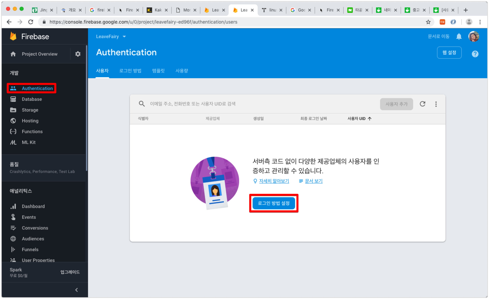
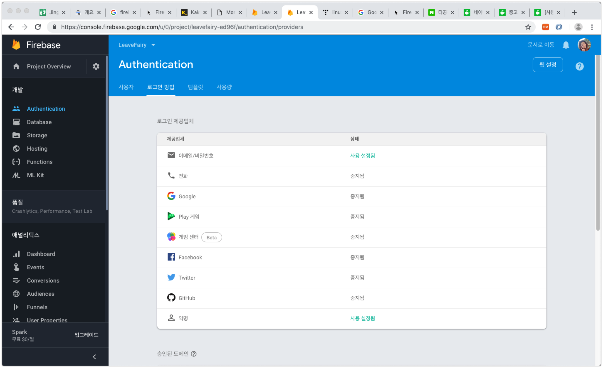
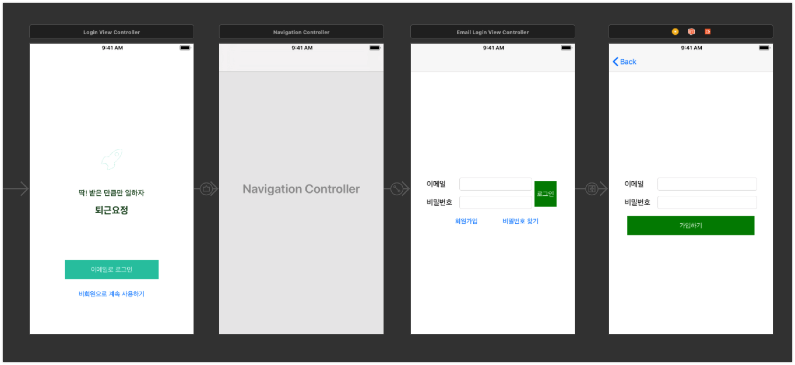
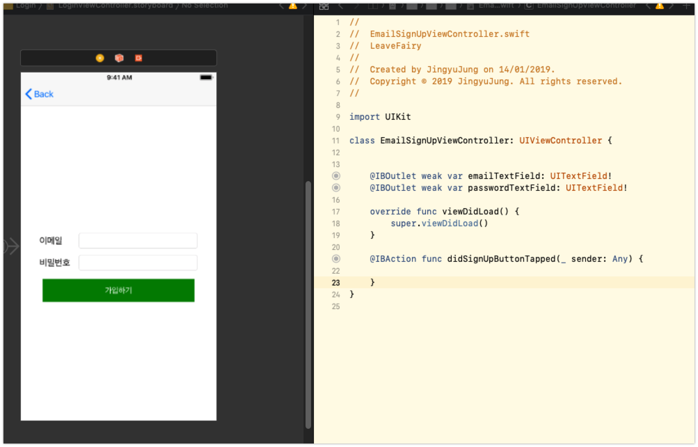
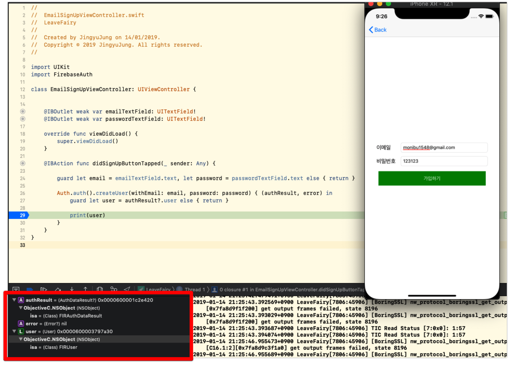
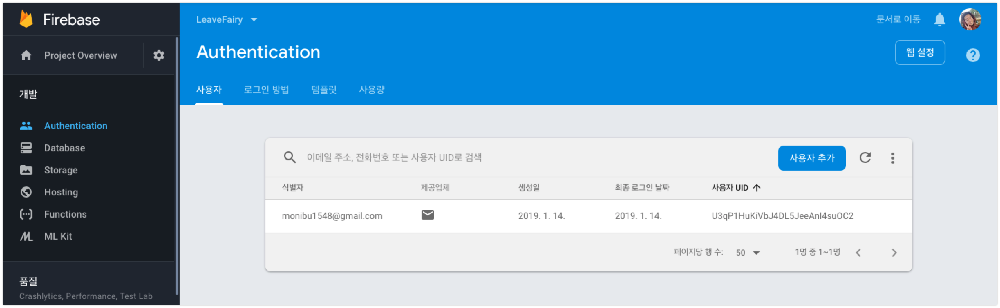
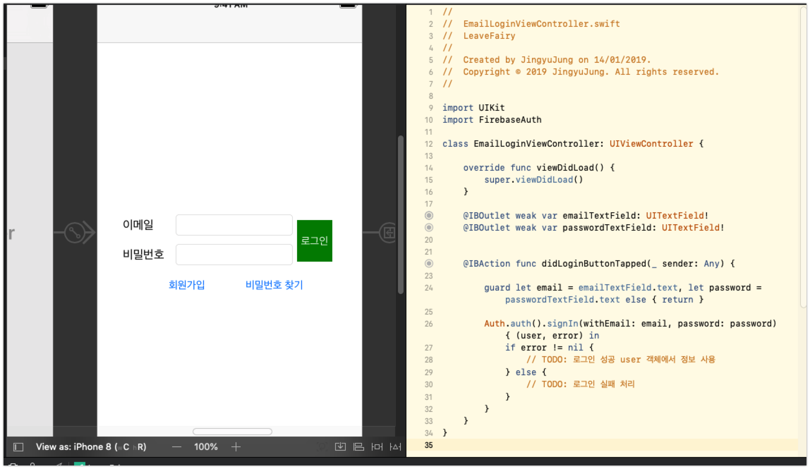
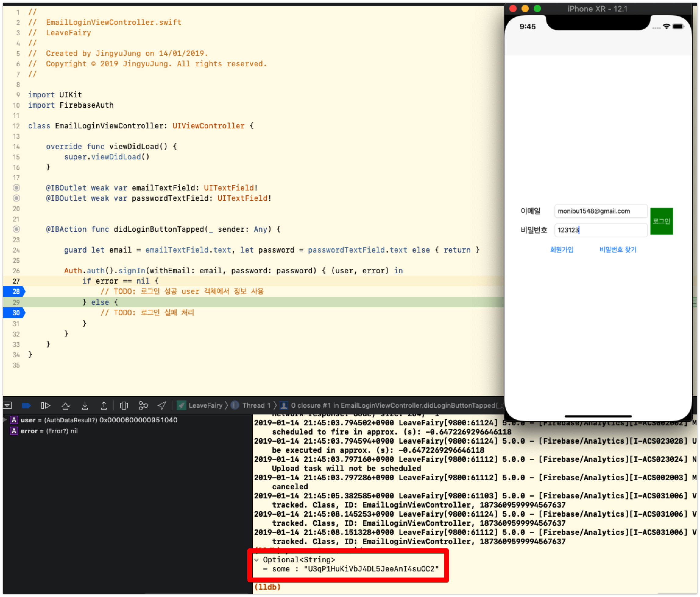

iOS앱 고도화 - Firebase Authentication 적용하기 첫번째 (이메일/비밀번호 회원가입, 로그인)
-읽음
iOS앱 고도화 - Firebase Authentication 적용하기 첫번째 (이메일/비밀번호 회원가입, 로그인)
이 포스트를 시작으로 지금까지 개발했던 앱에 Firebase Authentication을 적용합니다.
로그인 (인증)을 적용하는 이유는 다음과 같습니다.
- 유저 정보 획득 (Push Target을 디테일하게 설정, 유저 유입/이탈 확인)
- Sqlite3에 저장하던 정보를 Firebase Realtime DB로 마이그레이션 할 수 있음. => 위젯 개발 가능
- 나중에 게시판, 채팅 구현에 있어서 로그인 기반이 자리잡혀 있어야 함.
Firebase Authentication Console 설정
- Firebase Authentication Console 페이지 열기

- Firebase Console > Authentication > 로그인 방법 설정
- 로그인 제공업체 설정

- 2019년 1월 현재 기준으로 이메일, 전화 구글, 등 9가지의 로그인 방법을 제시하고 있습니다.
- 퇴근요정 앱에는
익명과이메일로그인을 사용할 예정입니다.
iOS 앱 구현 (이메일/비밀번호 회원가입)
- Pod install
프로젝트의 Podfile에 Firebase/Auth를 추가하고 pod install을 실행합니다.
- Firebase 초기화
AppDelegate의 application:didFinishLaunchingWithOptions: 메소드에서 FirebaseApp 객체를 초기화합니다.
기존에 Firebase를 사용하고 있었다면 이미 초기화 하고 있습니다.
- 로그인 페이지 제작

위 처럼 로그인 페이지를 만들어줍니다. 디자인은…. 나중에 :)
그리고 이제 앱의 첫 실행페이지를 로그인 페이지로 연결해 줍니다.

가장 첫번째로 필요한 페이지. 로그인을 하기 전 회원가입을 먼저 해야합니다. 이메일 로그인 페이지를 구현합니다.
1 | import UIKit |
위 코드를 구성 후 회원가입을 시도하면 다음과 같은 결과가 리턴됩니다.

AuthToken값이 담긴 FIRUser 객체가 리턴되며 Firebase Authentication console에서 회원가입이 되었음을 확인할 수 있습니다.

iOS 앱 구현 (이메일/비밀번호 로그인)

이메일/비밀번호 로그인 페이지의 구현.
1 | import UIKit |
로그인 성공 처리

로그인 성공 이후 처리과정에 대해서..
로그인 이후에는 uid를 key값으로 DB에 데이터를 읽고/쓰며 사용자에 특화된 서비스를 제공할 수 있습니다.
uid의 관리 (세션 유지, 로그아웃) 등의 처리는 주로 LoginManager 또는 SessionManager라는 이름의 싱글톤객체를 통해 앱의 라이프사이클 내에서 사용하도록 합니다.
후기
지금까지 세션관리는 까다로운 영역이었다. 학부시절 nodejs passport로 로그인을 관리하던 때, 신입교육때 spring에서 redis를 이용해 세션을 관리 때문에 머리아팠던 적이 있다.
퇴근요정 앱에 로그인 관련 기능을 추가하기로 마음먹으면서 고생 꽤나 먹겠구나 싶었다.
하.지.만 역시 Firebase… 회원DB 는 생각할 필요도 없으며 클라이언트 단에서도 API구현의 복잡성 없이 제공되는 API 호출만으로 accessToken까지 구하는데 막힘 없이 간단하게 성공했다.
일단 email 인증으로 시작했지만, 하나 하나 더 붙여나가 볼 예정.